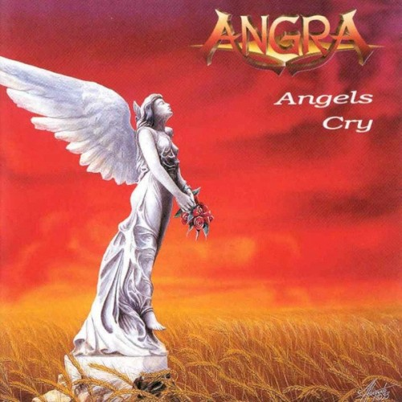

Angels Cry
Elenco
- Andre Matos — vocals, keyboards, piano
- Rafael Bittencourt — guitars, backing vocals
- Kiko Loureiro — guitars
- Luis Mariutti — bass
- Alex Holzwarth — drums (session)
Sobre o álbum
Angels Cry é o álbum de estreia da Angra, lançado em novembro de 1993 e gravado na
Alemanha com a produção de Charlie Bauerfeind e Sascha Paeth. O disco consolidou a
banda brasileira no cenário internacional do power/progressive metal, combinando
virtuosismo, orquestrações e referências clássicas com letras em inglês conduzidas
por Andre Matos. Foi um marco para o metal feito no Brasil e abriu caminho para o
sucesso posterior da banda, especialmente no Japão.
Gravação
As sessões ocorreram entre julho e setembro de 1993 no Hansen Studios (Hamburgo,
estúdio de Kai Hansen, do Gamma Ray) e no Horus Sound Studio (Hanover), com mixagem
no VOX Klangstudio em Bendestorf. Sascha Paeth programou teclados e contribuiu como
guitarrista convidado; Kai Hansen e Dirk Schlächter (Gamma Ray) e o próprio Paeth
participam com solos em "Never Understand". Thomas Nack (baterista do Gamma Ray na
época) tocou bateria na cover de "Wuthering Heights". O baterista fundador Marcos
Antunes foi substituído por Alex Holzwarth a pedido dos produtores; Ricardo
Confessori aparece nas fotos promocionais, mas só entrou na banda após a gravação.
Andre Matos descreveu o processo como um "exílio" dentro de um bunker da Segunda
Guerra Mundial, sem janelas nem luz natural.
Conceito
O álbum equilibra faixas épicas de power metal com passagens progressivas e citações
clássicas (Schubert, Paganini, Vivaldi, Mendelssohn) e até referências brasileiras
("Asa Branca" em "Never Understand"). Tematicamente, as letras de Matos e
Bittencourt exploram superação, espiritualidade, injustiça social e busca de sentido —
um discurso melódico e grandioso típico do power metal dos anos 1990, com matizes
progressivos na composição.
Recepção
Angels Cry recebeu críticas positivas no meio metal internacional (Metal Storm 8,6/10;
Scream Magazine 5/6) e alcançou a 17ª posição no Oricon japonês. O álbum é
frequentemente citado como um dos discos fundadores do power metal latino-americano
e permanece referência na discografia da banda, com reedições e comemorações
(incluindo edição especial de 30 anos em 2023).
Faixas
- 1. Unfinished Allegro 0/10 1:13 Instrumental
- 2. Carry On 10/10 5:05
- 3. Time 6/10 5:57
- 4. Angels Cry 10/10 6:48
- 5. Stand Away 2/10 4:57
- 6. Never Understand 3/10 7:50
- 7. Wuthering Heights 10/10 4:39
- 8. Streets of Tomorrow 2/10 5:03
- 9. Evil Warning 3/10 6:42
- 10. Lasting Child 1/10 7:34
Referências
- Angels Cry (album) — Wikipedia (article)
- Angra — Metal Express Radio review (article)
- Angels Cry — MusicBrainz (database)